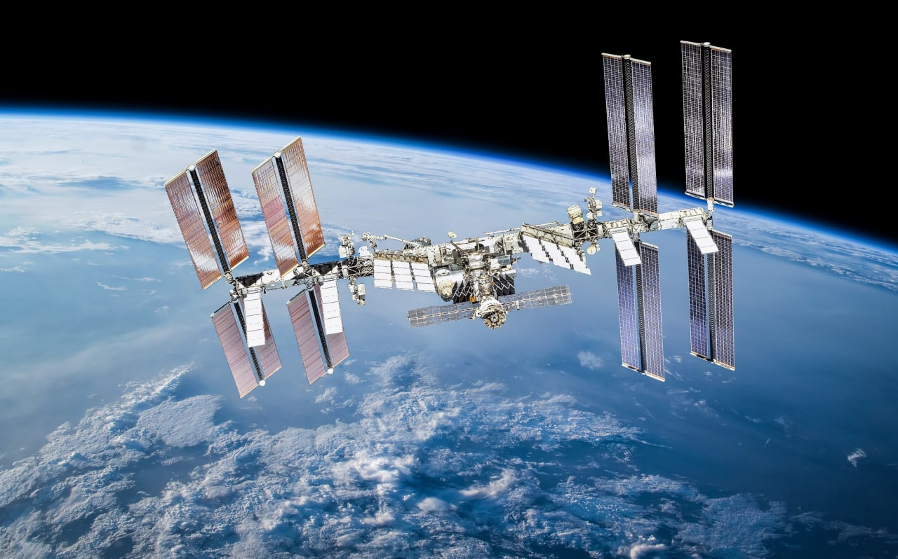
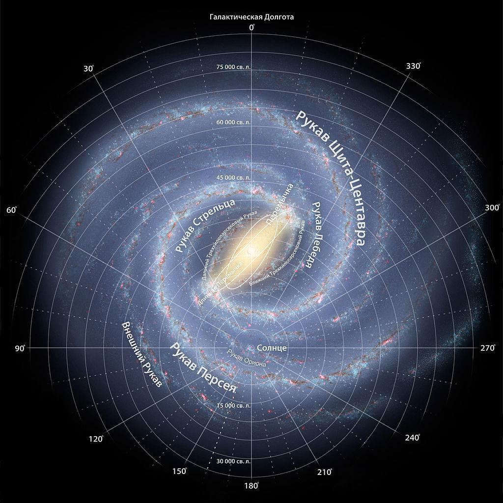
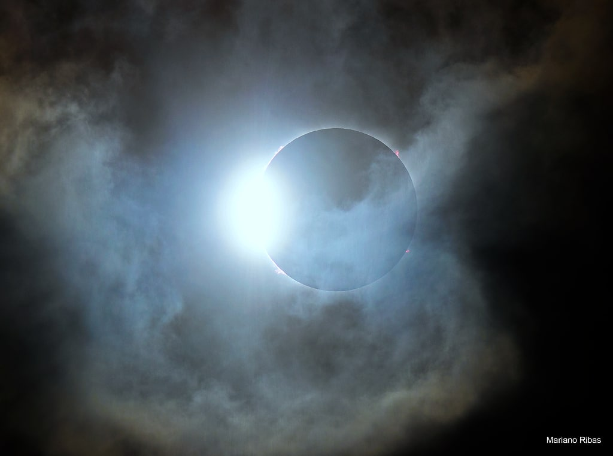
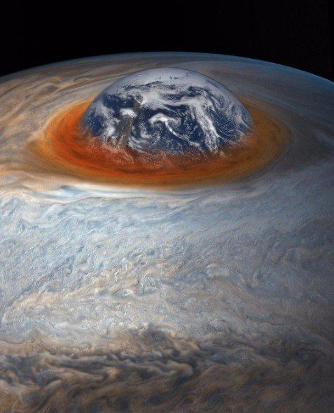

Данный сайт создан для облегчения изучения курса физики средней школы. Информация на сайте представляет собой конспекты параграфов учебника Пурышева 7-9 классов. Также на сайте присутствуют интересные новости из области физики и астрономии, для привлечения интереса учащихся к данному предмету.
В среднем самолеты летают со скоростью около 900 км/ч, а Международная космическая станция вращается вокруг Земли со скоростью 27 576 км/ч! (На самом деле её можно увидеть проносящейся мимо, она выглядит как очень яркая звезда, движущаяся по небу)

"Космический адрес" нашей планеты: Галактическая Нить Персея-Пегаса, комплекс сверхскоплений Рыб-Кита, Местная группа галактик, галактика Млечный Путь, рукав Ориона, Солнечная система, Земля.
Строение нашей галактики "Млечный путь".

Невероятная фотография Солнечного затмения 14 декабря.

Сравнение Большого Красного Пятна на Юпитере с размерами Земли.
